ポポーの枝に花っぽい小さいのがありました。
更新日 : 2023/02/12
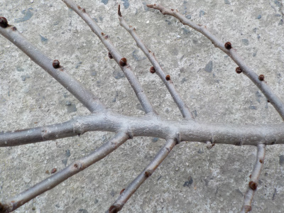
ポポーの枝を剪定しました。ポポーの木は軽くて柔らかいので切るのが簡単でした。
切った枝には茶色くて小さいもがいくつもありました。花かな？芽かな？
更新日 : 2023/02/12

ポポーの枝を剪定しました。ポポーの木は軽くて柔らかいので切るのが簡単でした。
切った枝には茶色くて小さいもがいくつもありました。花かな？芽かな？
更新日 : 2023/04/09
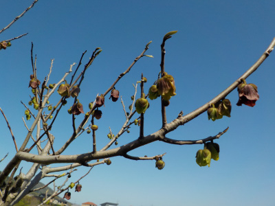
年々ポポーの花数が増えています。
今年も大量にポポーが食べれそうです。
更新日 : 2023/06/24
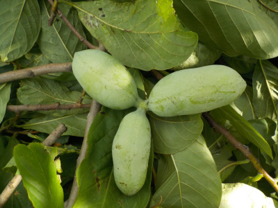
毎年やっていますが、ポポーが茂って大きくなり過ぎたので剪定しました。
実を落とさないように注意してるんですが、小さくするためには多少の犠牲がでますね。
更新日 : 2023/09/07
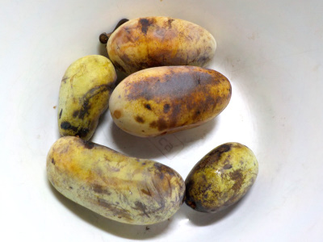
そろそろかなーと思って見てみたらポポーが落ちていました。
いつ落ちたんでしょうね？一部虫に食べられていたので、食べるのがちょっと怖かったです。
食べてみた感じは、いつも通りの味で美味しかったです。良かった。
2023/09/12
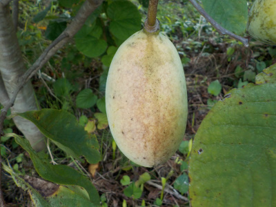
木から落ちると虫が付くので、落ちる前に収獲したいと思いました。
この実は色が黄色くて熟れていそうですが、まだ実が硬く甘い匂いがしません。
まだ収獲時期ではなさそうです。
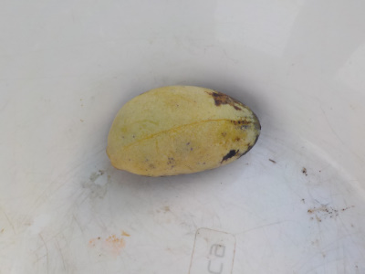
今日木から落ちる前に収獲した実はこれ一つだけでした。
2023/09/24
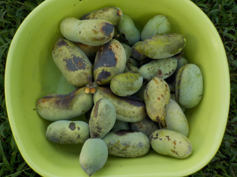
風に揺らされて、ポポーが沢山落ちました。
青くて硬いものが多くありますが、これらはちゃんと追熟するかな？
更新日 : 2023/10/01
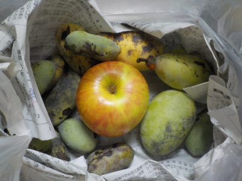
青いポポーがなかなか熟れないので、リンゴを買って同じ袋に入れました。
リンゴを入れたら、ちょっとずつ熟れてる感じがします。効果があったんでしょう。
袋を閉じると湿気がこもるので、カビが発生しました。ちょっと開けた方がよさそうです。
更新日 : 2023/10/08
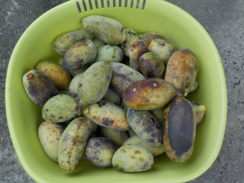
ポポーが沢山落ちてました。
今が1番収穫が多いかな。食べれないので皮とタネを取って、ジップロックに入れて冷凍してます。
更新日 : 2023/10/18
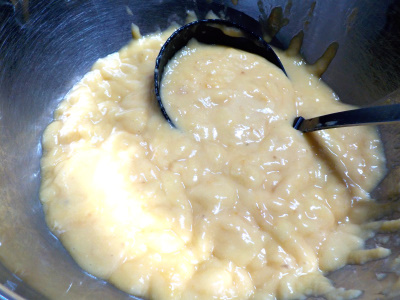
まだ木に少し残っていますが、沢山収穫したのでもういいかな。
今年はポポーを冷凍してシャーベットにして食べてます。冷凍庫にポポーのストックが沢山出来ました。
繊維質が多いので、チョットづつ食べようと思ってます。
更新日 : 2024/04/07
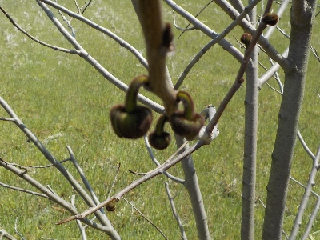
ポポーは受粉とか袋掛けや消毒をしなくていいから楽でいいですね。
でも収穫の時期は毎日のように熟れ具合を見るので、トータルの手間は多いかな。
更新日 : 2024/08/18
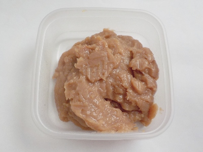
去年作った冷凍ポポーが減らないので、ジャムにしました。
ポポーのシャーベットはヨーグルトに入れて食べると美味しいんですが、ヨーグルトで薄まるので１回の消費量が少なかったです。
ジャムは煮詰めたら味噌みたいな見た目になりました。煮詰めで濃厚になって、あんこみたい。これに寒天を少し加えたらポポー羊羹が出来そうです。
このままでも水ようかんみたいなので、このまま食べてもいいな。
2024/08/28
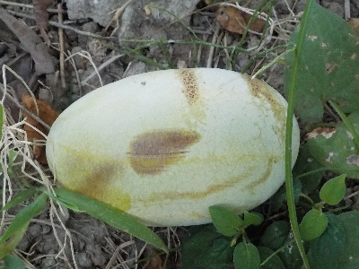
そろそろポポーの収穫時期が来るなと思い木の下を見たら、落ちていました。
毎日は無理だけど、2日に1回は収穫したいな。
今日は２つ収穫しました。
更新日 : 2024/09/01
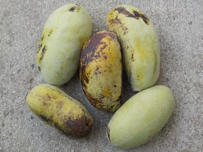
前回から4日ぶりにポポーの実が落ちていました。
数が少ないので生食かな。
更新日 : 2024/09/11
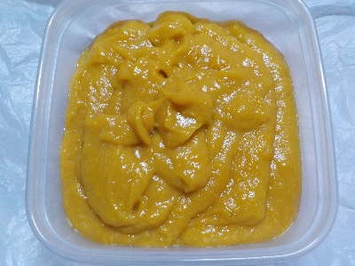
前回ポポージャムを作ったときは茶色かったですが、今回は黄色くなりました。
前回は冷凍を解凍したときに水分が分離して、煮詰め易かったかもしれない。
今回はフレッシュなポポーをジャムにしました。
更新日 : 2024/09/12
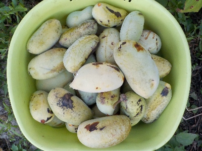
大量にあって食べきれないので、ジャムにして冷凍します。
あー手間暇かかるなー。凄く美味しいならいいけど、そこまで美味しくないんだよなー。
毎年沢山食べているので、ありがたさがなくなってしまっている。
更新日 : 2024/10/06
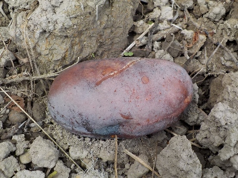
ポポーを食べすぎたせいか、只今ポポーは嫌いな果物ナンバー1です。
もう収穫もしたくないので、落ちた実を放置しています。
冬になったらバッサリ剪定してコンパクトにしよう。
更新日 : 2024/12/15
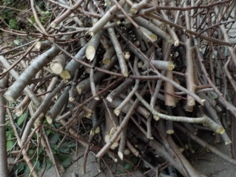
ちょっと前まで大嫌いだったポポーですが、しばらく食べていなかったので最近普通に食べれるようになりました。
しかし収穫シーズンになったらまた嫌いになると思うので、バサバサ切って小さくしました。
実は美味しくないポポー。